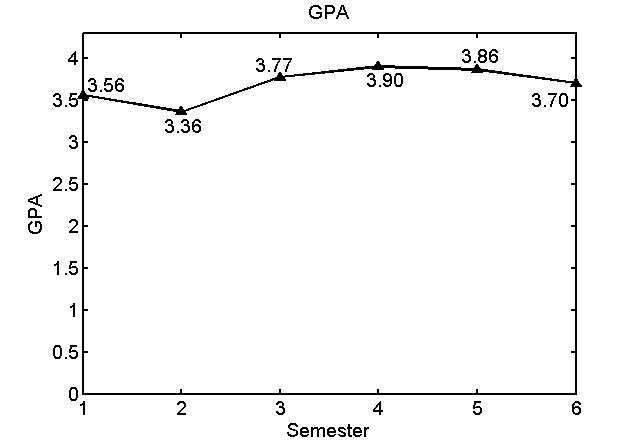
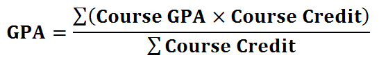

Home > Education > USTC > Academic Performance
University of Science and Technology of China, Hefei, Anhui China
| B.S. Computer Science | Sept. 2007 - Present |
Academic Performance
Overall GPA : 3.68
Overall GPA Rank : 5/121
Weighted Average Score : 87.58/100.00
GPA Curve:

About GPA
In University of Science and Technology of China (USTC), the system of Grade Point Average (GPA) is:
| Course Score | Course Grade | Course GPA | Qualification |
|---|---|---|---|
| 100~95 | A+ | 4.30 | |
| 94~90 | A | 4.00 | Excellent |
| 89~85 | A− | 3.70 | |
| 84~82 | B+ | 3.30 | |
| 81~78 | B | 3.00 | Very Good |
| 77~75 | B− | 2.70 | |
| 74~72 | C+ | 2.30 | |
| 71~68 | C | 2.00 | Good |
| 67~65 | C− | 1.70 | |
| 64 | D+ | 1.50 | |
| 63~61 | D | 1.30 | Passable |
| 60 | D− | 1.00 | |
| 59~0 | E | 0.00 | Failure |
And the GPA is calculated by the following formula:
